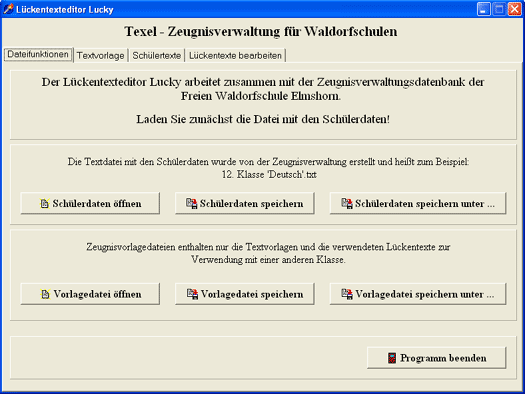
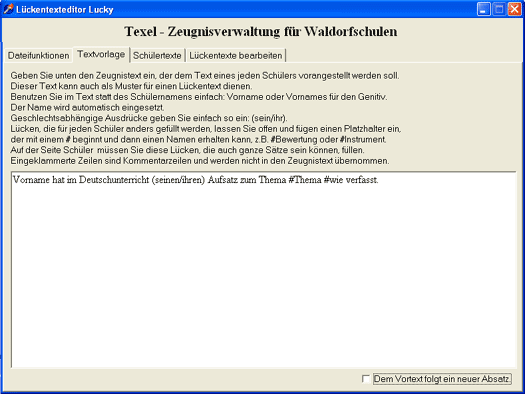
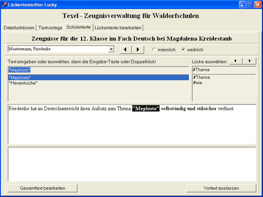
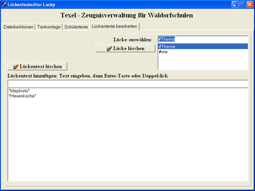

Texel-Hilfe

Einleitung
Beispiele
Überblick
Installation
Organisation
Einstellungen
Schülerdaten
Layout
Dateivorlagen
Schreiben
Einlesen
Korrigieren
Ausdrucken
Lückentexteditor
Kontakt
Eine Zeugnisverwaltung für Waldorfschulen
Der Lückentexteditor Lucky
Lucky ist ein unabhängiges Programm, das unter Windows läuft. Man öffnet damit die Textdateien, die Texel für jedes Fach erstellt hat. Eine Textvorlage mit Platzhaltern kann dann schnell für jeden Schüler gefüllt werden.
Durch Ersetzen der Lücken in der Vorlage:
Vorname hat im Deutschunterricht (seinen/ihren) Aufsatz zum Thema #Thema #wie verfasst.
wird dann zum Beispiel der Text:
Friederike hat im Deutschunterricht ihren Aufsatz zum Thema "Mephisto" selbständig und stilsicher verfasst.
Mit dem Lückentexteditor Lucky können Sie Texte in die von der Zeugnisdatenbank Texel erstellten Vorlagedateien für die Zeugnistexte schreiben. Diese Dateien enthalten die Schülernamen und deren Geschlecht. Alle Funktionen von Lucky lassen sich auch direkt mit einem Texteditor in die Dateien schreiben, Lucky erleichtert die Arbeit aber enorm.
Dateifunktionen
Textvorlage
Schülertexte
Lückentexte bearbeiten
Dateifunktionen

Öffnen Sie zunächst die Textdatei mit den Schülerdaten, die von Texel erstellt wurde. Nach dem Bearbeiten müssen Sie die Datei natürlich wieder speichern. Dabei besteht die Möglichkeit alle Lücken zu füllen. Sie können die einzelnen Lücken später dann nicht mehr einzeln verändern. Andernfalls wird die Lückentextvorlage als Vortext gespeichert und für jeden Schüler wird angegeben, wie die Lücken bei seinem Text gefüllt werden soll. Eine genaue Beschreibung dieser Möglichkeiten finden Sie in dieser Hilfe. Spätenstens beim Einlesen der Datei von Texel werden die Lücken dann endgültig ersetzt.
Möchten sie nur die Lückentextvorlage und die Texte, die in die Lücken gefüllt werden können, speichern um sie später mit einer anderen Klasse wiederverwenden zu können, können Sie diese Texte in einer Vorlagedatei speichern. Diese enthält nicht die Schülernamen und die Texte der einzelnen Schüler! Um diese Datei wiederzuverwenden, öffnen sie die Datei mit den Schüöerdaten und zusätzlich die Vorlagedatei mit den Lückentextvorlagen. Die Vorlagedatei ist eine Textdatei, besitzt aber die Dateiendung .luc.
Textvorlage

Erstellen Sie nun eine Textvorlage, die später für jeden Schüler individuell ergänzt wird. Die Platzhalter Vorname und Vornames werden durch den Vornamen des Schülers bzw durch den Genitiv ersetzt.
Geschlechtsabhängige Ausdrücke werden als Beispiel so angegeben: (Er/Sie), (sein/ihr) usw.
Andere Lücken werden benannt, indem dem Namen das Zeichen # vorangesetzt wird.
Jeder Schüler kann auf den Lückentext folgend noch einen zusätzlichen Text bekommen. Geben Sie unten auf diesem Formular an, ob zwischen den beiden Texten ein neuer Absatz begonnen werden soll.
Schülertexte

Wenn Sie einen Schüler zum ersten Mal aufrufen, ist die Voreinstellung, dass er keinen Vortext bekommt. Fügen Sie durch Anklicken der Schaltfläche Vortext hinzufügen den Vortext hinzu. Die erste Lücke ist bereits angewählt. Klicken Sie nun einen Text für diese Lücke doppelt an oder geben Sie einen neuen Text in das Textfeld ein. Beenden Sie die Eingabe durch die Eingabetaste oder einen Doppelklick. Die Lücke wird gefüllt und die nächste Lücke angewählt. So fahren Sie fort, bis alle Lücken gefüllt sind. Beim nächsten Schüler stehen dann alle je eingegeben Texte zur Verfügung. Sie können einen Lücke auch durch Anklicken der Lücke in dem Text auswählen.
In dem unteren Textfeld können Sie einen Text schreiben, der nur für diesen Schüler dem Vortext folgt. Dieser entspricht dem eigentlichen Fachtext. Der Lückentext ist ja als Vortext abgespeichert.
Wollen Sie den Gesamttext, also auch den Lückentext frei bearbeiten, wählen Sie die Schaltfläche Gesamttext bearbeiten. Soll der Schüler den Vortext nicht bekommen, wählen Sie die Schaltläche Vortext auslassen.
Lückentexte bearbeiten

Mit der Zeit sammeln sich Texte zum Füllen der Lücken an, die vielleicht nicht mehr benötigt werden. Diese können hier gelöscht werden oder neue Texte hinzugefügt werden. Auch ganze Lücken können entfernt werden. Sind diese aber noch im Text vorhanden, werden Sie später wieder automatisch hinzugefügt.